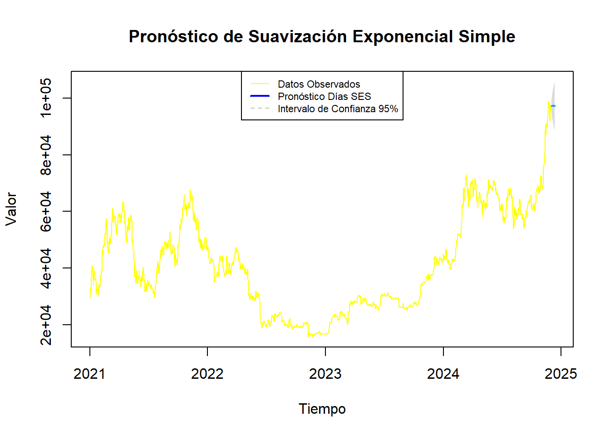
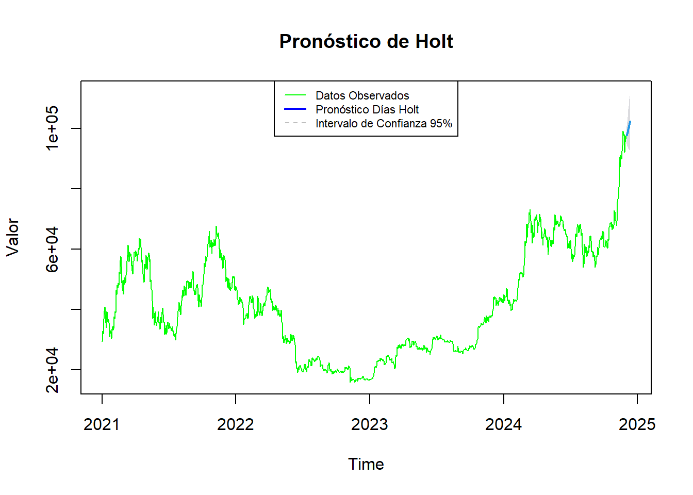
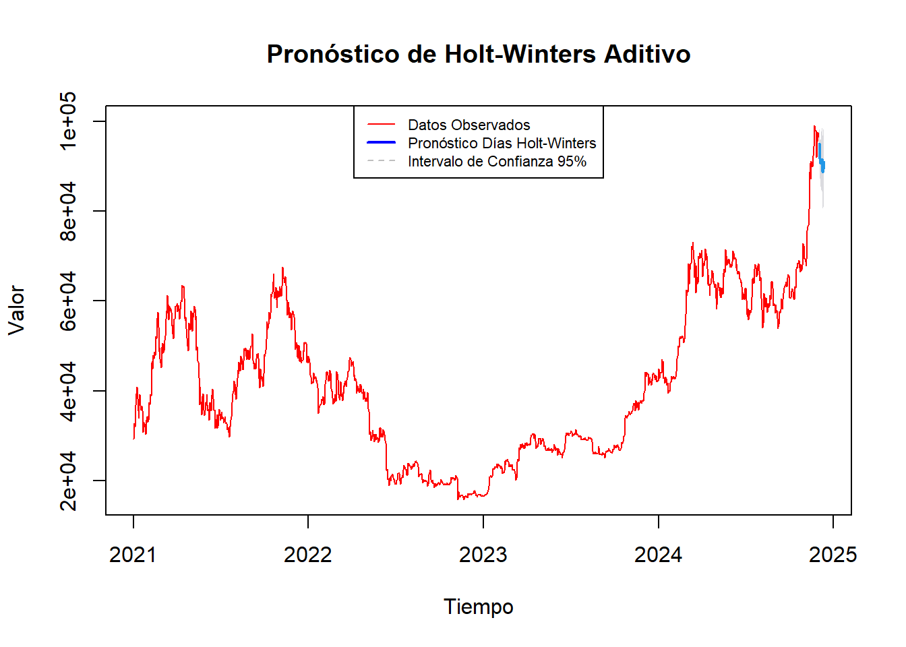

Capítulo 4 Modelos de Pronósticos (Suavización Exponencial)
Los modelos de pronóstico para series de tiempo son herramientas estadísticas que permiten anticipar valores futuros de una serie de datos a partir de sus registros históricos. Estas técnicas son esenciales en contextos donde los datos muestran fluctuaciones temporales y patrones que favorecen las proyecciones, como ocurre en activos financieros volátiles como Bitcoin.
En este apartado se trabajará con la serie original, dado que, cuando se realizó la diferenciación a la serie, se eliminó la tendencia y disminuyó la estacionalidad, componentes que son necesarios para poder trabajar con modelos de suavización exponencial, que son no estacionarios, mientras que la serie diferenciada es más apta para modelos estacionarios.
Cabe resaltar que, el pronóstico con suavización exponencial, asigna un mayor peso a los datos más recientes, atenuando la influencia de los datos más antiguos, lo que permite captar los patrones actuales sin depender en exceso de las observaciones históricas más lejanas. Los pronósticos se realizarán por los siguientes 10 días y manejando un intervalo de confianza del 95%.
4.1 Suavización Exponencial Simple
Este modelo solo considera el nivel de la serie, es decir, el valor promedio reciente, ajustado con mayor peso a los valores más recientes. No tiene en cuenta la tendencia ni la estacionalidad, por lo que asume que la serie fluctúa alrededor de un valor constante.
# Configurar la semilla para reproducibilidad
set.seed(123)
# Ajusta el modelo de suavización exponencial simple
ses_btc <- ses(btc_ts, h = 10, level = 95)
# Graficar el pronóstico
plot(ses_btc, main = "Pronóstico de Suavización Exponencial Simple",
xlab = "Tiempo", ylab = "Valor", col = "yellow", lwd = 1)
# Añadir leyenda
legend("top", legend = c("Datos Observados", "Pronóstico Días SES", "Intervalo de Confianza 95%"),
col = c("yellow", "blue", "grey"), lty = c(1, 1, 2), lwd = c(1, 2, 1), cex = 0.7, horiz = FALSE)
## Point Forecast Lo 95 Hi 95
## 2024.9205 97250.1 94429.26 100070.9
## 2024.9233 97250.1 93334.56 101165.6
## 2024.9260 97250.1 92485.04 102015.2
## 2024.9288 97250.1 91765.57 102734.6
## 2024.9315 97250.1 91130.10 103370.1
## 2024.9342 97250.1 90554.68 103945.5
## 2024.9370 97250.1 90024.93 104475.3
## 2024.9397 97250.1 89531.46 104968.7
## 2024.9425 97250.1 89067.70 105432.5
## 2024.9452 97250.1 88628.85 105871.4Se observa que la predicción es una línea horizontal, dado que asume que no hay crecimiento ni cambio estacional. En consecuencia, el modelo SES proyecta los valores futuros considerando únicamente el nivel de la serie, por lo cual puede resultar en predicciones similares para todos los períodos si no existen cambios significativos en los datos recientes. En este caso la proyección refleja valores aproximados homogéneos en USD 97,250.1 debido a la naturaleza del SES y la suavización empleada.
4.2 Modelo de Holt
Conocido como suavización exponencial doble, se basa en un enfoque para el pronóstico de series de tiempo que maneja componentes de nivel y tendencia. Su atractivo radica en su capacidad de capturar la tendencia, a través de un segundo componente en la serie. Esto permite al modelo ajustarse a series que muestran una dirección (crecimiento o decrecimiento) a lo largo del tiempo.
# Configurar la semilla para reproducibilidad
set.seed(123)
# Aplicar modelo de Holt con IC del 95%
holt_model <- holt(btc_ts, level = c(95))
# Realizar el pronóstico para los próximos 10 periodos
forecasted_values <- forecast(holt_model, h = 10)
# Graficar la serie observada y el pronóstico
plot(forecasted_values, main = "Pronóstico de Holt", xlab = "Time", ylab = "Valor", col = "green", lwd = 1)
# Añadir leyenda
legend("top", legend = c("Datos Observados", "Pronóstico Días Holt", "Intervalo de Confianza 95%"),
col = c("green", "blue", "grey"), lty = c(1, 1, 2), lwd = c(1, 2, 1), cex = 0.7, horiz = FALSE)
## Point Forecast Lo 95 Hi 95
## 2024.9205 97767.47 94923.23 100611.7
## 2024.9233 98268.29 94299.34 102237.2
## 2024.9260 98769.11 93891.76 103646.5
## 2024.9288 99269.93 93594.85 104945.0
## 2024.9315 99770.75 93366.42 106175.1
## 2024.9342 100271.57 93184.68 107358.5
## 2024.9370 100772.39 93036.68 108508.1
## 2024.9397 101273.21 92914.03 109632.4
## 2024.9425 101774.03 92810.95 110737.1
## 2024.9452 102274.85 92723.25 111826.4Observando los valores pronosticados, parece haber una ligera tendencia ascendente en los próximos periodos, donde el valor pronosticado va aumentando del primer día al décimo día. Para el primer pronóstico se encuentra que, dadas las condiciones y el comportamiento histórico de la serie, con un nivel de confianza del 95%, el valor del activo es poco probable que caiga por debajo de aproximadamente USD 94,923.23 o supere USD 100,611.7.
Por otra parte, la gran amplitud del intervalo de confianza indica que el pronóstico es altamente incierto. Esto refleja la naturaleza volátil de la serie diferenciada de Bitcoin, donde los datos fluctúan continuamente y el modelo tiene dificultades para capturar patrones predecibles. Esto también se debe a que el modelo de Holt no asume una relación directa entre el nivel de la serie y la variabilidad futura.
Como complemento es necesario destacar que, en este tipo de modelos, la incertidumbre se acumula en el tiempo de manera que los intervalos de confianza tienden a expandirse conforme se proyecta hacia adelante. Esto significa que el rango de los intervalos aumenta con el horizonte de predicción, pero no en proporción directa al nivel estimado.
4.3 Modelo de Holt-Winters
Conocido como suavización exponencial triple, contempla componentes de nivel, tendencia y estacionalidad. Su atractivo radica en su capacidad de capturar la estacionalidad, a través de un tercer componente en la serie.
Ahora, se proede con la generación del modelo de Holt-Winters completo, en este caso el aditivio, que es adecuado para series con estacionalidad de magnitud constante.
# Configurar la semilla para reproducibilidad
set.seed(123)
# Aplicar el modelo Holt-Winters aditivo
hw_additive_model <- HoltWinters(btc_ts, seasonal = "additive")## Warning in HoltWinters(btc_ts, seasonal = "additive"): optimization difficulties: ERROR:
## ABNORMAL_TERMINATION_IN_LNSRCH# Realizar el pronóstico para los próximos 10 periodos
forecasted_values_additive <- forecast(hw_additive_model, h = 10, level = 95)
# Graficar la serie observada y el pronóstico con intervalos de confianza
plot(forecasted_values_additive, main = "Pronóstico de Holt-Winters Aditivo",
xlab = "Tiempo", ylab = "Valor", col = "red", lwd = 1)
# Añadir leyenda
legend("top", legend = c("Datos Observados", "Pronóstico Días Holt-Winters", "Intervalo de Confianza 95%"),
col = c("red", "blue", "grey"), lty = c(1, 1, 2), lwd = c(1, 2, 1), cex = 0.7, horiz = FALSE)
# Mostrar los valores de pronóstico de Holt y los intervalos de confianza
print(forecasted_values_additive)## Point Forecast Lo 95 Hi 95
## 2024.9205 95000.67 91653.51 98347.83
## 2024.9233 91698.81 87358.24 96039.37
## 2024.9260 90697.60 85547.69 95847.50
## 2024.9288 90947.06 85095.01 96799.11
## 2024.9315 91219.24 84737.29 97701.20
## 2024.9342 91576.05 84517.07 98635.04
## 2024.9370 89506.88 81911.67 97102.10
## 2024.9397 88693.09 80594.33 96791.84
## 2024.9425 89511.00 80935.62 98086.37
## 2024.9452 90991.66 81962.32 100021.01El pronóstico muestra una tendencia ligeramente descendente, en concordancia con el comportamiento reciente de la serie. Esto podría indicar que el modelo de Holt-Winters está captando una posible estabilización o ligera reducción en los precios en los próximos periodos, reflejando el comportamiento de corto plazo observado al final de la serie histórica.
Para el primer periodo proyectado, el intervalo de confianza del 95% se encuentra aproximadamente entre USD 91,653.51 y USD 98,347.83. Esto significa que, con un 95% de confianza, se espera que el valor real del activo caiga dentro de este rango, proporcionando un margen de variabilidad para el valor futuro.
Además, los amplios intervalos de confianza reflejan la naturaleza volátil de la serie de tiempo. Estos intervalos muestran una considerable incertidumbre en las proyecciones futuras, lo que es típico en series con alta variabilidad como esta. La amplitud de los intervalos se incrementa a medida que avanza el horizonte de pronóstico, lo que indica que la confianza en las proyecciones disminuye en periodos más lejanos debido a la acumulación de error en el tiempo.
4.4 Resumen de Métricas
La elección del tipo de suavización exponencial depende de la estructura de la serie de tiempo, y de los resultados obtenidos al evaluar las métricas de precisión para determinar su efectividad.
# Ajustar los modelos
ses_model <- ses(btc_ts, h = 5, level = 95)
holt_model <- holt(btc_ts, level = c(95))
hw_additive_model <- HoltWinters(btc_ts, seasonal = "additive")## Warning in HoltWinters(btc_ts, seasonal = "additive"): optimization difficulties: ERROR:
## ABNORMAL_TERMINATION_IN_LNSRCH# Calcular las métricas de precisión para cada modelo
metrics_ses <- forecast::accuracy(ses_model$fitted, diff_btc)
metrics_holt <- forecast::accuracy(holt_model$fitted, diff_btc)
metrics_hw_additive <- forecast::accuracy(hw_additive_model$fitted[,1], diff_btc)
# Extraer y mostrar las métricas importantes para cada modelo
ses_metrics <- data.frame(
Model = "SES",
MAE = metrics_ses["Test set", "MAE"],
RMSE = metrics_ses["Test set", "RMSE"],
MAPE = metrics_ses["Test set", "MAPE"],
ACF1 = metrics_ses["Test set", "ACF1"],
TheilsU = metrics_ses["Test set", "Theil's U"]
)
holt_metrics <- data.frame(
Model = "Holt",
MAE = metrics_holt["Test set", "MAE"],
RMSE = metrics_holt["Test set", "RMSE"],
MAPE = metrics_holt["Test set", "MAPE"],
ACF1 = metrics_holt["Test set", "ACF1"],
TheilsU = metrics_holt["Test set", "Theil's U"]
)
hw_additive_metrics <- data.frame(
Model = "Holt-Winters Additive",
MAE = metrics_hw_additive["Test set", "MAE"],
RMSE = metrics_hw_additive["Test set", "RMSE"],
MAPE = metrics_hw_additive["Test set", "MAPE"],
ACF1 = metrics_hw_additive["Test set", "ACF1"],
TheilsU = metrics_hw_additive["Test set", "Theil's U"]
)
# Combina los resultados en una tabla
all_metrics <- rbind(ses_metrics, holt_metrics, hw_additive_metrics)
print(all_metrics)## Model MAE RMSE MAPE ACF1 TheilsU
## 1 SES 41375.87 44796.25 51334.59 0.9786711 96.60984
## 2 Holt 41444.47 44894.46 51379.13 0.9787384 96.61733
## 3 Holt-Winters Additive 39312.67 43491.04 60665.30 0.9837329 95.07895El modelo Holt-Winters Aditivo tiene el menor error medio absoluto (MAE), lo que indica que, en promedio, es el que menos se desvía de los valores reales. De igual forma, presenta el menor error cuadrático medio (RMSE), lo que refuerza que este modelo tiene una mayor precisión al reducir el impacto de grandes errores en comparación con los otros modelos. Sin embargo, muestra un error porcentual absoluto medio (MAPE) más alto, lo que sugiere que, aunque es más preciso en términos absolutos, su desempeño es menos consistente cuando se observa en términos relativos (porcentuales), lo cual indica cierta variabilidad en su precisión.
Además, todos los modelos presentan una alta autocorrelación en los errores (ACF1). Esto puede señalar que aún existe un patrón en los errores de predicción que no ha sido completamente captado por los modelos, lo cual podría afectar la calidad de las predicciones a lo largo del tiempo.
Finalmente, todos los modelos muestran un valor alto en el índice de Theil’s U. En general, un valor de Theil’s U cercano a 0 indica un buen desempeño en comparación con un modelo de referencia (ingenuo), mientras que un valor cercano a uno, sugiere que el modelo de pronóstico podría no ser adecuado.
Lo expuesto hasta aquí, indica que, el uso de modelos no estacionarios, como Holt, Holt-Winters y Suavización Exponencial Simple, en series altamente volátiles como la de Bitcoin presenta varios desafíos que limitan la precisión y consistencia de los pronósticos. Su dependencia de tendencias y suavización para hacer pronósticos a corto y mediano plazo es menos efectiva cuando el activo subyacente muestra comportamientos erráticos y cambios bruscos en el valor. Esto justifica por qué, aunque el modelo Holt-Winters Aditivo es el mejor en términos absolutos, su desempeño no es consistente ni óptimo en términos relativos para una serie tan impredecible.